Инструкция
Монитор заказов интернет-магазина
Кнопка на рабочем столе в 1С:Торговля.
Интернет-магазин — это наше общее преимущество
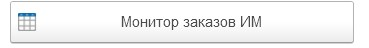
Работа с заказами интернет-магазина — одно из направлений нашей деятельности, а не формальность.
В компании не существует «чужих» продаж: каждый онлайн-заказ требует такого же внимания, скорости и качества сервиса, как и прямая продажа в зале. От эффективности работы с этим каналом напрямую зависит выполнение планов и развитие всей команды.
-
Онлайн-продажи напрямую влияют на вашу премию.
Каждая сумма, прошедшая через интернет-заказ в вашем магазине, учитывается в общих показателях и идет в фонд мотивации всей команды. Выдавая онлайн-заказ, вы работаете на свой личный результат.
-
Это ваш готовый офлайн-клиент.
Человек, который оформил заказ с самовывозом, живет или работает совсем рядом с вами. Он уже сделал первый шаг — зашел к нам в торговый зал. Ваша улыбка, быстрая выдача и грамотная консультация превратят его в постоянного покупателя, который в следующий раз придет за покупками сразу к вам, а не пойдет к конкурентам.
-
Мы — передовая технологичная компания.
Сегодня строительный рынок меняется, и наличие собственного сильного интернет-магазина выделяет нас среди обычных строительных точек. Мы не просто «магазин у дома», мы современный сервис, который ценит время покупателей. Быть частью такой команды — значит идти в ногу со временем и быть на шаг впереди рынка.
Как выглядит монитор заказов интернет-магазина
На экране три части: отборы, кнопки работы с заказом и список заказов.
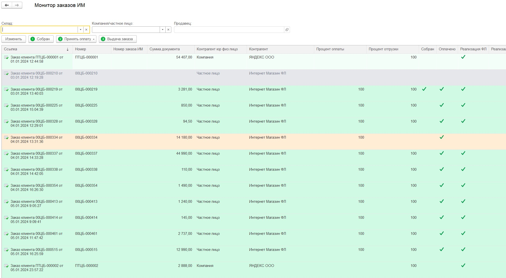
Отборы
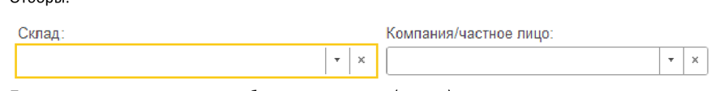
Список можно сузить по магазину (складу) отгрузки и по типу покупателя: компания или частное лицо.
Кнопки
Кнопки стоят в том порядке, в каком с ними работают.
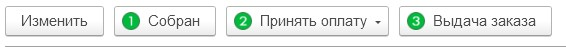
| Кнопка | Что делает |
|---|---|
| Изменить | Открывает карточку заказа. Здесь меняют товар и дописывают данные, если это нужно. |
| Собран | Ставит выбранному заказу статус «Собран». |
| Принять оплату | Принимает оплату наличными или картой. У кнопки есть список. |
| Выдача заказа | Создаёт отгрузку. Статус товара в заказе становится «Отгрузить», создаётся документ «Реализация и счет-фактура». |
Сначала проверьте, что заказ проведён
Перед оплатой и перед выдачей заказ клиента должен быть проведён.
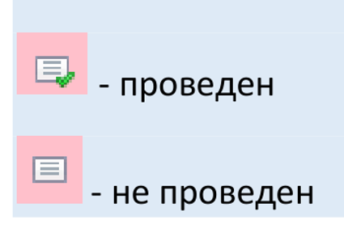
- Значок документа с зелёной галочкой: заказ проведён. Можно принимать оплату и выдавать.
- Значок без галочки: заказ не проведён. Сначала проведите документ.
Описание столбцов монитора
физ
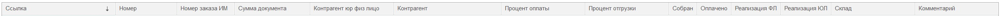
| Колонка | Что в ней |
|---|---|
| Ссылка | Ссылка на заказ клиента в 1С:Торговля |
| Номер | Номер заказа в 1С:Торговля |
| Номер заказа в ИМ | Номер заказа на сайте интернет-магазина. |
| Сумма документа | Полная стоимость всех товаров в заказе. |
| Контрагент юр физ лицо | Тип покупателя: частное лицо или компания. |
| Контрагент | Наименование контрагента. |
| Процент оплаты | Какая доля заказа оплачена, в процентах. |
| Процент отгрузки | Какая доля товаров отгружена, в процентах. |
| Собран | Статус сборки. Собранный заказ отмечен зелёной галочкой. |
| Оплачено | Зелёная галочка, если заказ оплачен полностью. |
| Реализация ФЛ | Зелёная галочка, если покупатель частное лицо и создана реализация. |
| Реализация ЮЛ | Зелёная галочка, если покупатель компания и создана реализация. |
| Склад | Склад отгрузки. |
| Комментарий | Комментарий заказа клиента. |
В каком порядке вести заказ
Идём по кнопкам слева направо. Сначала заказ, потом сборка, потом оплата, и только затем выдача.
Заказ
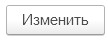
Кнопка «Изменить». Поправьте товар или данные, если это нужно.
Сборка
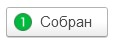
Соберите товар. Когда сборка закончена, нажмите «Собран». В колонке «Собран» появится зелёная галочка. Список после этого обновится сам.
Оплата
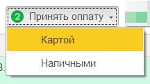
Если заказ уже оплачен на сайте, деньги второй раз не берём. Смотрите «Процент оплаты» и галочку «Оплачено». Если оплаты нет, нажмите «Принять оплату»: наличные или карта. Когда закроете окно оплаты, список обновится сам: изменятся процент оплаты и отметка «Оплачено».
Выдача
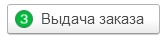
Кнопку «Выдача заказа» нажимаем один раз.
Программа делает четыре вещи:
- Товары в заказе переводит в статус отгрузки.
- Создаёт и проводит документ «Реализация».
- На основании «Реализации» создаёт «Счёт-фактуру».
- Показывает на экране сообщение о результате.
Быстрый поиск интернет-заказа в Мониторе ИМ
-
Попросите клиента показать QR-код заказа.
Как найти QR-код в интернет-заказе ИМ - Откройте Монитор заказов ИМ.
- Отсканируйте код сканером.
-
Быстрый поиск в Мониторе ИМ сразу покажет Вам заказ клиента.
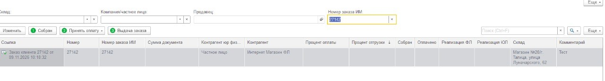
Продавец: штрихкод TB-
Поле «Продавец» стоит в быстрых отборах, рядом со «Складом» и «Компания/частное лицо». Оно заполняется само, когда сканируют штрихкод. Вручную сотрудника туда не вписать.
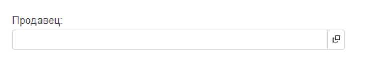
- Штрихкод продавца начинается с TB-. Пример: TB-Иванов.
- После сканирования в поле «Продавец» подставляется этот сотрудник.
- В начале смены штрихкод лучше отсканировать сразу. При выдаче сведения о продавце сами попадут в документ реализации. Данная продажа упадет в персональную мотивацию продавца.
- Если штрихкод не распознан, на экране будет сообщение, что объект не найден.
Цвет строки
Кроме галочек в колонках, строка заказа подсвечивается цветом:
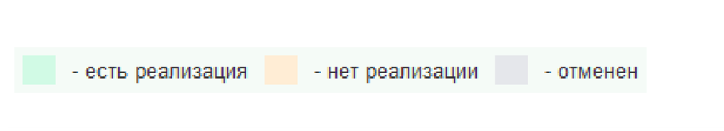
| Цвет строки | Что означает |
|---|---|
| Зелёный | Выдача оформлена. Документ «Реализация» создан. |
| Оранжевый | Выдача ещё не оформлена. Документа «Реализация» нет. |
| Серый | Заказ отменён. |
Контрольные точки перед выдачей
| Проверка | Как должно быть |
|---|---|
| Склад | Ваш магазин. Если фильтр по складу мешает найти заказ, отбор сбрасывают крестиком |
| Продавец | В начале смены отсканирован штрихкод TB-. Поле руками не заполняют |
| Заказ | Проведён: у значка документа зелёная галочка |
| Сборка | Нажата «Собран», в колонке зелёная галочка |
| Оплата | Полная: процент и галочка «Оплачено». Если на сайте не оплачено, деньги приняты кнопкой |
| Строка | Пока выдачи нет, строка оранжевая. Серую, отменённую, не выдаём |
| Выдача | Кнопка нажата один раз. Реализация проведена, счёт-фактура создана, на экране есть сообщение |
| После выдачи | Строка зелёная: реализация есть. Повторная выдача вторую реализацию не создаёт |